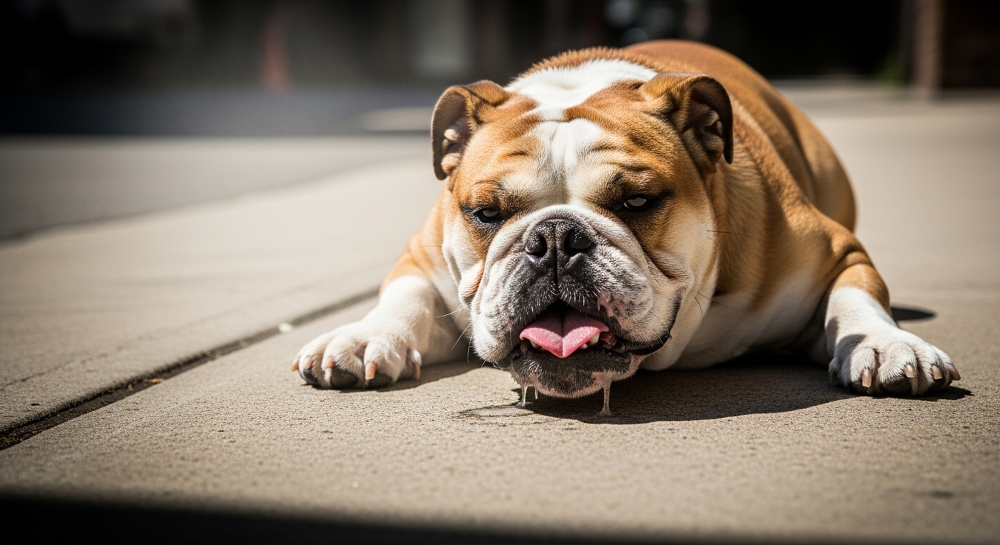
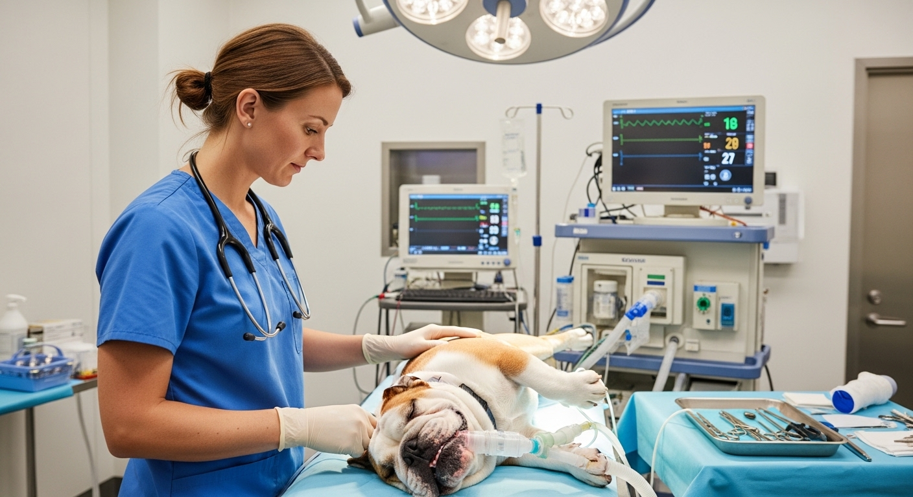
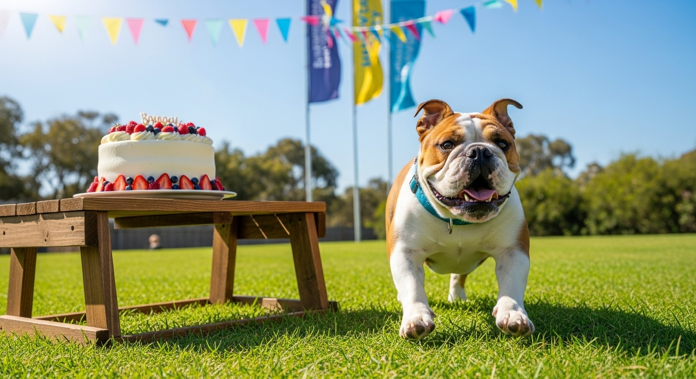

The Bulldog
Crisis
A Fight for Their Next Breath
We bred them for courage. We bred them for loyalty. And then, in our pursuit of a "cute" aesthetic, we trapped one of the world's most beloved dogs in a body that is actively trying to kill them.
The modern Bulldog—with its signature smashed face and deep wrinkles—is the victim of a devastating genetic betrayal. Behind the snoring and the adorable snorts is a grim reality: millions of Bulldogs are spending their entire lives struggling to simply breathe.
The Invisible
Suffocation
Veterinarians call it Brachycephalic Obstructive Airway Syndrome (BOAS). But the clinical term hides the daily nightmare. Imagine trying to run, play, or even sleep while breathing through a crushed cocktail straw. That is the Bulldog’s reality.
Their nostrils are pinched shut. Their windpipes are terrifyingly narrow. Excess tissue in their throats literally chokes them from the inside. When a Bulldog collapses from heat stroke—a tragic and frequent "killer" of the breed—it isn’t just because they are hot.
It is because they are suffocating.


A
Tightrope Walk
with Death
Because of the anatomical disaster humans created, even routine medical care is a life-or-death battle. For a Bulldog, going under anesthesia isn't a standard procedure; it is a high-wire act requiring elite medical expertise. Routine drugs can be fatal.
If a breathing tube is removed even seconds too early, they can drown in their own airways.
Saving these dogs requires a strict, uncompromising protocol of 12-hour fasts, precise gas combinations, and vets who refuse to cut corners.
The Frontline Heroes
Rescues & Ethical Breeders
But there is a rebellion against this tragedy. Across the country, a network of passionate advocates refuses to let the breed suffer in silence.
Organizations like the Lone Star Bulldog Club Rescue (LSBCR) are the trauma wards for this crisis. Operating heavily in the Dallas/Fort Worth area, these volunteers take in the surrendered, the sick, and the dying. They don’t just house dogs; they absorb the staggering financial and emotional costs of life-saving airway surgeries, cherry-eye corrections, and intensive rehabilitation. They counsel heartbroken families. They foster elderly dogs who are terrified and alone. They carry the weight of an entire broken system on their shoulders.
At the same time, a new wave of ethical breeders is fighting the aesthetic obsession. Armed with 15 years of genetic data, they are actively breeding back the Bulldog’s health. By demanding slightly longer snouts, wider nostrils, and athletic builds, they are proving that we can save the Bulldog’s soul while fixing its broken body.

Join the Rescue Mission
This fight is expensive, exhausting, and relentless. The surgeries required to open a dog’s airway or fix a collapsing trachea cost thousands of dollars. The rescues and ethical advocates holding the line cannot do it alone.
This is why community lifelines like the Bulldog Bonanza (hosted at The London Baker in Lewisville) are so vital. When you buy a specialty cake, enter a raffle, or donate to LSBCR, you aren't just "funding a non-profit."
You are buying oxygen.
You are paying for a surgery that will allow a dog to run in the grass without collapsing. You are helping to undo decades of damage.
We broke the Bulldog.
Now, it is our moral obligation to fix them.